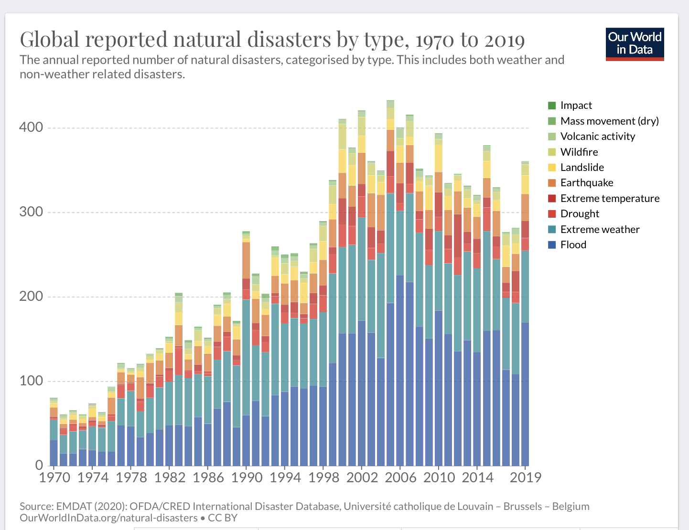
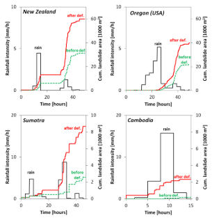
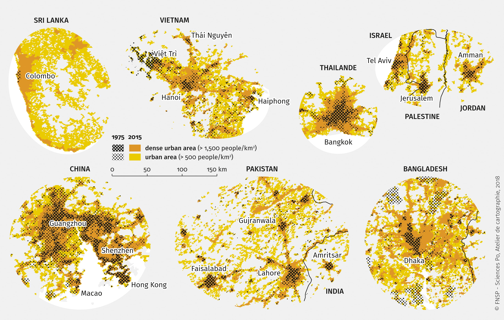
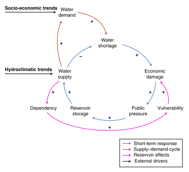

This lecture introduces the future challenges faced by decision-makers when planning long-term infrastructure projects. It describes four drivers that can influence risk in the future: (1) climate change, (2) environmental change, (3) socio-economic change and (4) changes in societal dependencies on infrastructure.
We have seen in the previous lectures that risk is defined as the interplay between the hazard, the population and assets that are exposed, and the vulnerability of the exposed population and assets to a hazard. Therefore, risk is not static, but constantly changing over time. For instance, Figure 12.1.1 shows the change in global number of hazards occurring, showing a clear rise in the total number of hazards (Ritchie and Roser 2014).
Given the large time span of infrastructure investments, which can have lifetimes of 50 years or more, decision-makers need to take scenarios of changing risk factors into account when designing an infrastructure system. Underestimating future risk might lead to infrastructure systems that are under designed, both in use and engineering design, which leads to rapid deterioration or failure of the asset. On the other hand, overestimating future risk might cause infrastructure systems to be overdesigned, resulting in more money being spent than is needed. Hence, understanding and quantifying the drivers of future risk is imperative for decision-makers to justify and inform investment decisions.
In this lecture we will briefly introduce the four main drivers of change in future risk:

Figure 12.1.1: Global reported natural disaster by type between 1970-2019 (Ritchie and Roser 2014)
We start by looking at how climate change might affect the frequency and magnitude of the hazards. Some hazards are more sensitive to changes in the climate than others; for instance, a change in the frequency of heatwaves is directly influenced by changes in the average temperature, whereas changes in hurricane activity do not follow such a linear relationship.
How the frequency and magnitude of different hazards change is often non-intuitive. For instance, for tropical cyclones, it was found that anthropogenic warming is causing the most intense cyclones to become more frequent (Elsner, Kossin, and Jagger 2008). In addition, it may vary from place to place. For example, based on 50 years of flood data for Europe (Blöschl et al. 2019) found that climate change has increased the flood hazard in some areas while it decreased in others. How climate change has shifted the river flood timing might differ considerably per regions. In some areas, earlier snowmelt causes floods to change. In other areas, it is because of shifts in the arrival of winter storms or because of an increased saturation of the soil. Therefore, how climate change may affect flooding is region specific and needs localized analysis in order to capture this.
In mini-lectures 12.2-4, we will investigate this problem in more detail and illustrate how to model future hazards.
Apart from changes in the climate system that might affect the occurrence of natural hazards, changes in environmental factors can also influence the hazard. This is often associated with either human-induced or natural change. Two examples of human-induced changes are the conversion of natural land to built-up areas and the deforestation of natural landscapes.
Between 1985 and 2015, global urban extent had expanded by around 10,000 square kilometres a year (Liu et al. 2020). Therefore, initially vegetated areas with permeable surfaces have been transformed to impermeable surfaces. This generates a large difference in flood occurrence, for both pluvial and fluvial flooding. Flood waters that were initially slowed down and partially buffered by the natural environments now run off quickly and in larger volumes. In the Linghua Basin in China, for instance, researchers found that urban expansion over the past 30 years has increased the peak flood volume by 162% (Du et al. 2015).
On top of the expansion of urban areas, a lot of land has been deforested, mainly due to the growth of agricultural cropland (Curtis et al. 2018). Deforested areas, in particular those located in areas with steep surface slopes and high rainfall, are prone to landslides. Research, for instance, showed that large-scale deforested areas are associated with a large increase in the landslide area in different regions globally (Lehmann, Ruette, and Or 2019). This is shown in Figure 12.1.2, illustrating how extreme rainfall events initiate landslides before and after deforestation happened (Lehmann, Ruette, and Or 2019).
These two examples highlight that changing land-use patterns might have unintended consequences on the occurrence of hazards.

Figure 12.1.2: The effect of deforestation on the occurrence of landslides in four regions worldwide (Lehmann, Ruette, and Or 2019)
The spatial locations of assets, and how society depends on these assets, determines the extent to which assets and populations are exposed to the adverse impacts of natural hazards. However, socio-economic growth, meaning population growth and changes in wealth, can increase this exposure due to: (1) increase in use of existing infrastructure services, (2) need for new infrastructure systems.
If this growth is happening in hazard-exposed regions, such as floodplains, future risk might increase rapidly. It has been shown, for instance, that current trends in increasing global flood losses are mainly associated with socio-economic growth in hazard-prone areas (Tanoue, Hirabayashi, and Ikeuchi 2016).
The socio-economic growth can be further disentangled into three underlying drivers.
Population changes: New urban areas are created in hazard prone areas leading to an increased exposure. This gives rise to new infrastructure provision in expanding areas.
Economic growth: Economic growth increases the value of assets at risk.
Changing living standards: Changes in living standards influence the use and need for existing and new assets. For instance, connecting initially unconnected households to the electricity and water network increases the total population dependent on such services.
Often these changes occur in tandem; rapidly growing economies see an increase in population and wealth in existing and newly developed urban areas that demand more infrastructure services. Figure 12.1.4 shows the rapid urban expansion in multiple cities between 1975 and 2015, showing how cities are expanding in different ways.

Figure 12.1.3: The urban expansion over time for cities in Sri Lanka, Viet Nam, China, Bangladesh, Israel, Pakistan (Espace Mondial n.d.)
The aforementioned drivers of risk are mainly external drivers, meaning that external processes determine whether an area or asset will experience more or less risk. However, infrastructure expansion itself may also initiate changes in risk. More specifically, infrastructure provision may cause shifts in the societal dependencies on these infrastructure assets. One example to illustrate this is called the ‘reservoir effect.’
Di Baldassarre et al. (2018) describe how the benefits from the construction of a reservoir can be quickly offset by two processes. First, increasing the water supply in an area can stimulate the consumption of water, thereby offsetting the intended increase in water storage. Second, the construction of a new reservoir can cause an over-reliance on this infrastructure, resulting in a larger societal disruption if this reservoir is affected by a drought. This process is illustrated in the Figure 12.1.5 below, showing that increasing the reservoir storage and water supply can lead to an increasing dependency and vulnerability when the reservoir levels are low, resulting in larger economic damages.

Figure 12.1.4: A schematic diagram of the reservoir effect as a result of positive feedback processes between infrastructure and society, which can increase the vulnerability of the dependent population (Di Baldassarre et al. 2018)
In this lecture, we have given a brief introduction to how risk changes over time and identified the four main drivers of future hazard risk.